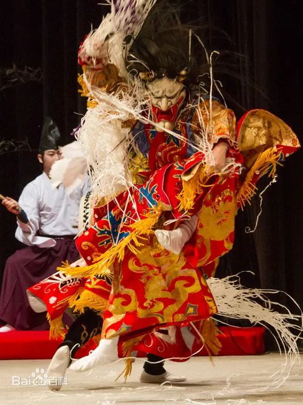
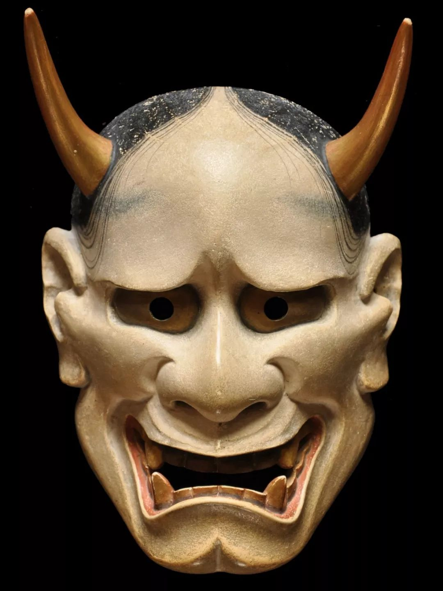
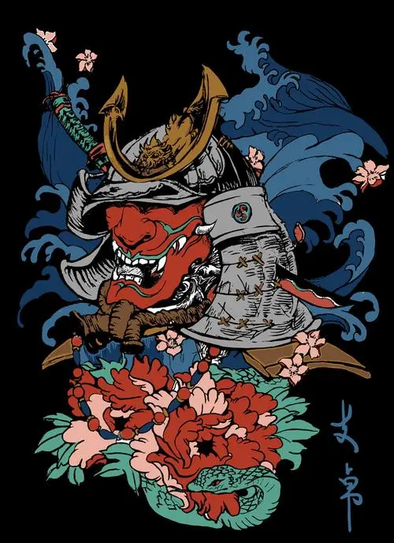

日本神话中的般若
般若是日本传说中的一种怨灵类鬼怪，据说是因强烈的妒忌与怨念所形成的恶灵。日本能剧中有假面（能面）名叫般若。
般若也有其类别之分，基本上有笑般若(わらいはんにゃ)、白般若(しろはんにゃ)和赤般若(あかはんにゃ)三大类。
能乐是一种独特的日本舞台艺术，是日本传统艺术的代表之一，在全世界享有极高的知名度，是国家无形文化财产之一。
能乐最大的特点就是需要佩戴面具演出，为了配合剧中不同的角色，能面的种类也是多种多样的。
般若是日本传说中的一种怨灵类鬼怪，据说是因强烈的妒忌与怨念所形成的恶灵。日本能剧中有假面（能面）名叫般若。
般若也有其类别之分，基本上有笑般若(わらいはんにゃ)、白般若(しろはんにゃ)和赤般若(あかはんにゃ)三大类。
能乐是一种独特的日本舞台艺术，是日本传统艺术的代表之一，在全世界享有极高的知名度，是国家无形文化财产之一。
能乐最大的特点就是需要佩戴面具演出，为了配合剧中不同的角色，能面的种类也是多种多样的。

般若面
般若面是表现女性怨灵的面，一般为肉色，头上有两只角，上眼睑突出，眼白部镶满金属，巨口獠牙，只有额上的眉墨及凌乱的头发表示她是女性。
整个表情非常激愤，但双眼的眼神是极度酸楚的，用于《道成寺》《葵上》《黑冢》剧目中的女怨灵。
般若面是表现女性怨灵的面，一般为肉色，头上有两只角，上眼睑突出，眼白部镶满金属，巨口獠牙，只有额上的眉墨及凌乱的头发表示她是女性。
整个表情非常激愤，但双眼的眼神是极度酸楚的，用于《道成寺》《葵上》《黑冢》剧目中的女怨灵。
 由来
由来
般若（Hannya mask）是日本传统的能剧艺术中的一种表演元素，象征着嫉妒凶恶的女性妖怪。般若面具的来源一般有三种说法：
1.由名匠般若坊制作，因此命名。传说般若坊是室町时代十五世纪晚期至十六世纪的能面师，是奈良般若寺的僧人，根据《假面谱》的记载，他是古假面制作师的八人之一，有认为他是最初制作般若面的人。
2.出自《源氏物语》。光源氏的妻子葵之上（葵姬）怀有了身孕，一日乘牛车出游参加加贺茂祭，与光源氏的情人六条御息所（六条妃子）发生争执，之后后者生灵出窍纠缠葵之上，为了退治怨灵，葵之上诵读般若经、行御修法，然而在葵之上产下一子后，被六条御息所生灵袭击暴毙，六条御息所之后与源氏分开，前往伊势。般若面因此得名于用般若经退治嫉妒怨灵之事。
3.制作这种面具，需要面具制造者有智慧，打开人们的眼睛，直面现实事物，这种智慧在佛教中被称为“般若”。
不管是哪一种说法，都反映出了能剧中的“般若”与佛教文化有关

释义
般若的日文读法是はんにゃ，是日本传说中的一种鬼怪，属于怨灵，来历是人因为嫉妒心，而导致自己的灵魂在自己活着的情况下离开自己身体，并且灵魂能攻击甚至杀死自己嫉妒的人。
此时如果灵魂能够回归体内，并且能够恢复理性，这样的状态叫做“生成”，当仇恨占据所有心智，无法恢复理性的时候，此人就会转化为鬼，即“般若”。
般若面鬼女起源于日本的蛇信仰，而所谓般若其实是蛇女变化的一个阶段，由生成变化而来，被称为中成，女子怨灵因嫉妒、恨意会逐渐变化，最终变成蛇、乃至真蛇。日本中关于蛇女传说的记载最早可以追溯到《吾妻镜》，其中讲到在文应元年北条政村之女生病，这是由于比企能员之女讃岐局作祟，传说中北条政村之女逐渐变化为蛇形，头生一对角，这是目前日本最早关于真蛇、般若之类蛇女传说的记载。
日本能剧中，“般若”出现在《葵上》第二部分,《道成寺》《黒冢》《红叶狩》中。
般若的日文读法是はんにゃ，是日本传说中的一种鬼怪，属于怨灵，来历是人因为嫉妒心，而导致自己的灵魂在自己活着的情况下离开自己身体，并且灵魂能攻击甚至杀死自己嫉妒的人。
此时如果灵魂能够回归体内，并且能够恢复理性，这样的状态叫做“生成”，当仇恨占据所有心智，无法恢复理性的时候，此人就会转化为鬼，即“般若”。
般若面鬼女起源于日本的蛇信仰，而所谓般若其实是蛇女变化的一个阶段，由生成变化而来，被称为中成，女子怨灵因嫉妒、恨意会逐渐变化，最终变成蛇、乃至真蛇。日本中关于蛇女传说的记载最早可以追溯到《吾妻镜》，其中讲到在文应元年北条政村之女生病，这是由于比企能员之女讃岐局作祟，传说中北条政村之女逐渐变化为蛇形，头生一对角，这是目前日本最早关于真蛇、般若之类蛇女传说的记载。
日本能剧中，“般若”出现在《葵上》第二部分,《道成寺》《黒冢》《红叶狩》中。